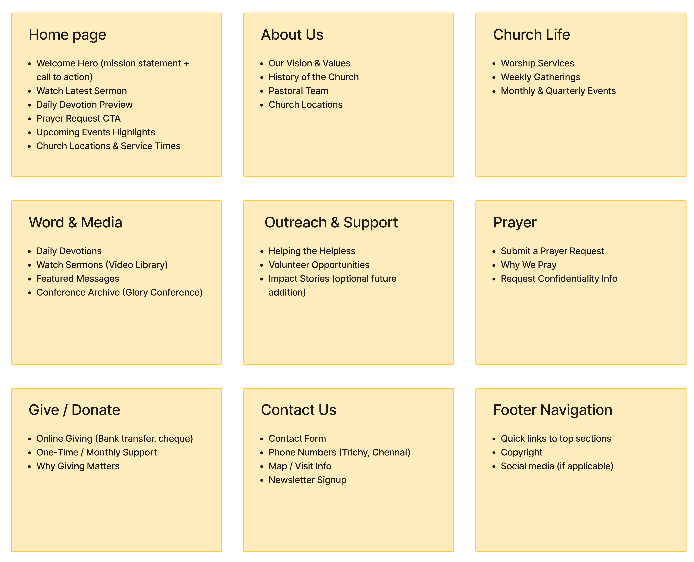
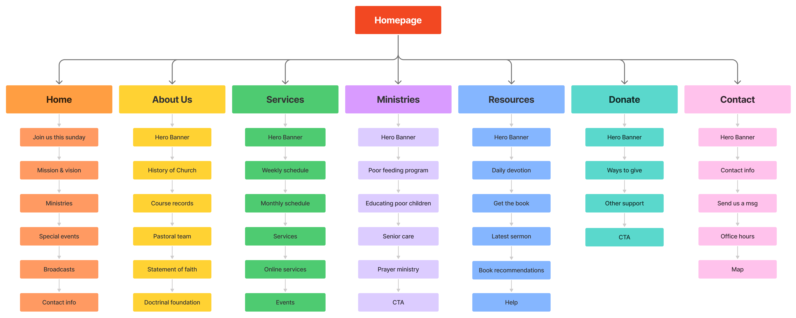
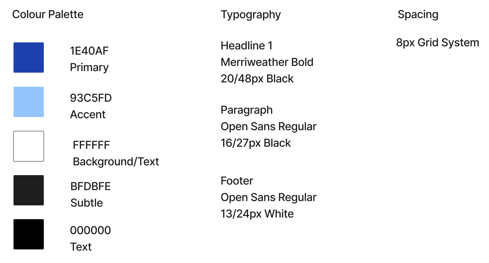
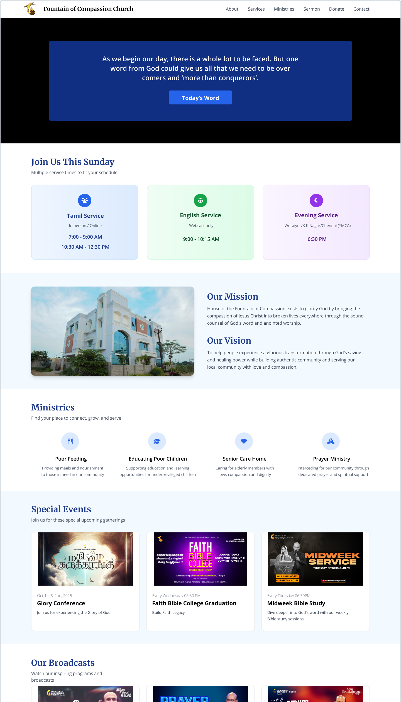
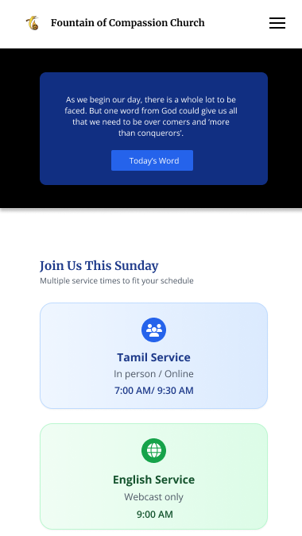
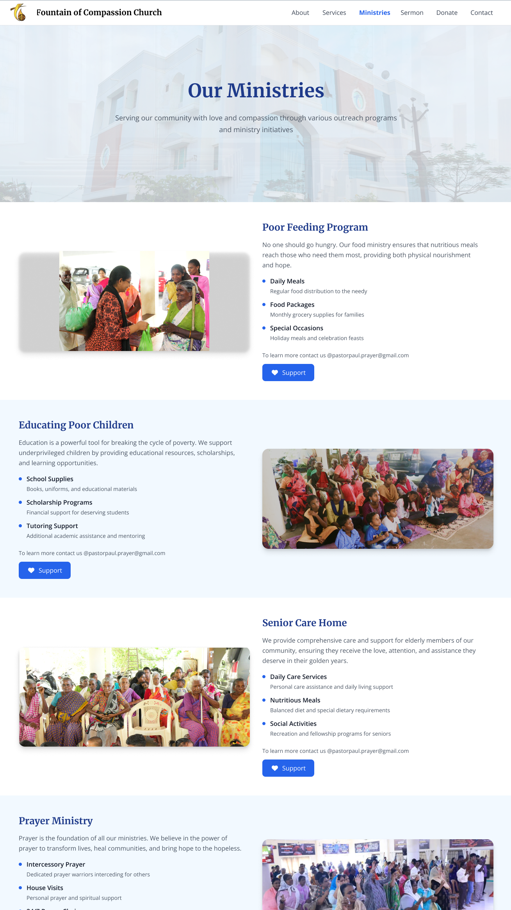
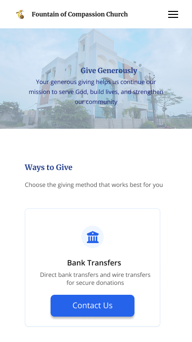

The Problem
Fountain of Compassion is a church in India, which is serving a global audience across India, North America, and parts of Africa through YouTube and TV broadcasts.
Their website had grown organically over years without structure. Content was unorganized, navigation was inconsistent, and the experience failed to meet users' expectations. Church leadership needed a redesign to serve a primarily young, smartphone first audience consuming spiritual content globally.
Research Goal
Redesign the website to support mobile first usage, improve content discoverability for global audiences, and create a scalable structure that serves local members, digital viewers, and international followers.
Research Approach
Before designing anything, I needed to understand the users, how they accessed the website, and what was their opinion.
1
Survey Responses
Collected data from 30+ users on visit frequency, content preferences, pain points, and their suggestions
2
Heuristic Evaluation
Conducted a systematic assessment of the existing website using Nielsen's principles to identify structural usability failures
3
Stakeholder Inputs
Met with church leadership to understand ministry priorities, concerns, suggestions and content requirements
Key Findings
1
Mobile first audience
73% users access the webssite via smartphones. The existing layout was not optimized for small screens, affecting usability and navigation flow.
2
Infrequent Engagement
74% visit rarely or occasionally. Users value content but lack structured pathways for consistent return visits.
3
Content Demand Clarity
Top requests were sermon videos, daily devotions, and worship music. These were difficult to locate in the previous structure.
4
Structural Usability Gaps
Navigation inconsistency, no form validation, outdated content visibility, and homepage overload reduced clarity and confidence.
Understanding the Users
Based on survey data and ministry reach, I developed three personas representing distinct needs and constraints.

Age 38, IT professional, regular church volunteer. Needs quick access to service times, events, and giving options. Uses Android smartphone during lunch breaks.

Age 29, software developer in Texas, discovered church through YouTube. Consumes long form content on weekends. Needs culturally relevant teaching and virtual community.

Age 45, headteacher in Nairobi, leads women's Bible study. Operates under data limitations. Needs downloadable content and offline access for group sharing.
Where to Focus
The church operates physically in India, but serves local members, North American viewers through YouTube, and TV followers in African regions.
The work was now focused on designing a mobile-first structure prioritizing sermon discovery, devotional access, and simplified navigation while supporting global accessibility and ministry scalability.
The Solution
01 SITEMAP
The original website had mixed all the info on the first page. Users found it very difficult to navigate. I reorganized around defined domains based on survey priorities and ministry requirements:
The Suggested Site Structure:
- Home
- About
- Church Life
- Word and Media
- Outreach
- Prayer
- Give
- Resources
- Contact
- Structure reflects survey content priorities
- Dedicated sections reduce cross-category confusion

02 INFORMATION ARCHITECTURE
This assumed sitemap was later discussed with the church authorities. They suggested a few changes. Based on that, I restructured the sitemap into a functioning IA:
New Structure:
- Defined seven primary sections: Home, About, Services, Ministries, Resources, Donate, Contact
- Standardized internal structure with consistent hero banners and section hierarchy
- Grouped weekly, monthly, and online services under a single Services section
- Consolidated outreach programs under Ministries for clearer impact visibility
- Centralized sermons, devotions, books, and help resources under Resources
- Separated Donate and Contact into focused, action-driven sections

03 Content and Design Strategy
Once the structure of the website was ready, I began planning content and design specifications:
Content Strategy
- Featured sermon series organized by topic
- Daily devotion section updated regularly
- Worship music grouped within media library
- Visual showcase of feeding programs, education, prayer requests
- Resource hub for books and newsletters
- Monthly updates on events, and ministry impact
Design Priorities
- Mobile-first layout and vertical scanning
- Clear call-to-action visibility
- Reduced cognitive load across homepage
- Consistent navigation presence
- Updated and structured content presentation
- Lightweight structure for varied environments
04 user flow
A userflow was created to understand the accessibility of the website. It has clear entry points, logical branching, and visible completion states.
- Finding service times
- Watching sermon series
- Submitting prayer requests
- Making online donations
- Accessing global streaming links
- Navigating outreach initiatives

05 visual components
A guideline of visual components and brand colors was defined to keep the whole structure uniform.
- Unified color hierarchy aligned with church branding
- Consistent typography pairing for clarity
- Structured spacing using 8-point rhythm
- Standardized button and link styles
- Consistent content card layouts

Key Screens
Homepage
Featured video at top, daily devotion section, quick links to sermons and events, social service highlights, social media integration. Reduces cognitive overload while surfacing primary content immediately.

Desktop homepage design

Mobile homepage design
Other Pages
Some more sample page designs

Desktop "Our Ministries" page design

Mobile "Donate" page design
impact
The redesigned website is now live and actively serving the church’s global community.
For users, the experience is easier to navigate on mobile devices, spiritual content is easier to discover, and key actions such as prayer requests and giving feel more straightforward.
For the church, the new structure supports consistent updates, integrates seamlessly with YouTube and broadcast platforms, and presents a modern, organized digital presence that reflects its growth.
View Live Site →HOW TO MEASURE SUCCESS
Mobile engagement and bounce rates
Sermon video views originating from website clicks
Prayer request submissions
Online giving conversions
Newsletter signups
Return visitor frequency
Limitations
Post Launch Testing
The redesign was based on survey data (30 respondents) and heuristic evaluation. Post launch usability testing with actual users across different regions, particularly testing with Kenya followers under real bandwidth constraints, would validate architecture decisions and reveal region specific friction points.
Reflection
This project reinforced that digital platforms serving global audiences must be designed with clarity and flexibility at their core.
The redesign was less about visual reinvention and more about alignment. Aligning structure with behavior. Aligning content with demand. Aligning interface decisions with real constraints.
That shift from page design to ecosystem thinking shaped the entire project.